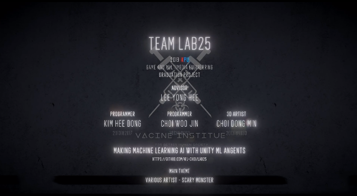

LAB25 (2019)
Introduction

This is LAB25 title scene produced by her0in. Since ‘zombie’ and ‘sci-fi’ is a main theme of this game, objects and user interface is designed under this concept.
In the past year, our team have developed a zombie fps game, LAB25 with unity game engine. Whole game resources were made by ourselves. We also applied deep learning AI which is being attention by IT industry. After finishing our development as a high quality game, we were able to display our game at kpu graduation show, and graduated in 2020.
Role in my team

This is a weapon name ‘electric club’ which kill zombie with electrical shock for just one swing. It was made by using unity particle system.
My role in the team was
Visual Effects
1. Ward

Scanner effect was created with using object world space position and sampling camera depth value. It detects ‘Limpid’ the transparent zombies and make them translucent.
Ward is a first special item that helps player to detect transparent zombies. It was inspired by game Left4Dead ‘Detector’ which detects zombie nearby.
2. Hearter

X-ray vision effect was created with using stencil buffer and adding Fresnel effect to the model. It detects survivors through the walls.
Hearter is a second special item that helps player to detect survivors in the stage. If player finds out other survivors and rescue them, they will help player with their special ability as an aid.
3. Jammer

Glow Circle was created with simply using unity’s decal system.
Jammer is a third special item that can control child zombies recognize range. If child zombie recognize player, it screams and explodes.
Finish
I am still upgrading not only my programming skills but also art skills. Now i'm in KPU graduate school to challenge in more professional and variety fields. Thanks for reading this post. Bye:)
copyright ©her0in all right reserved.